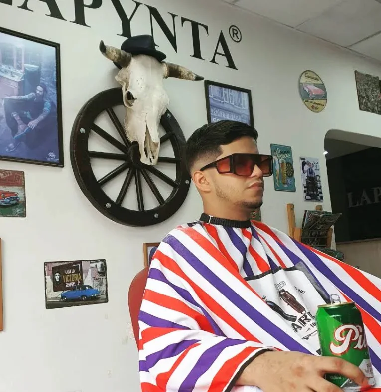
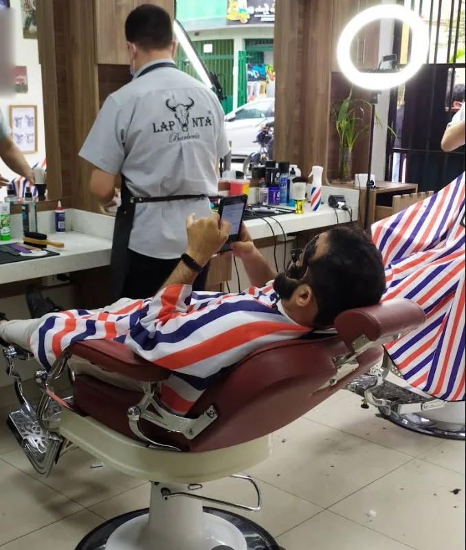
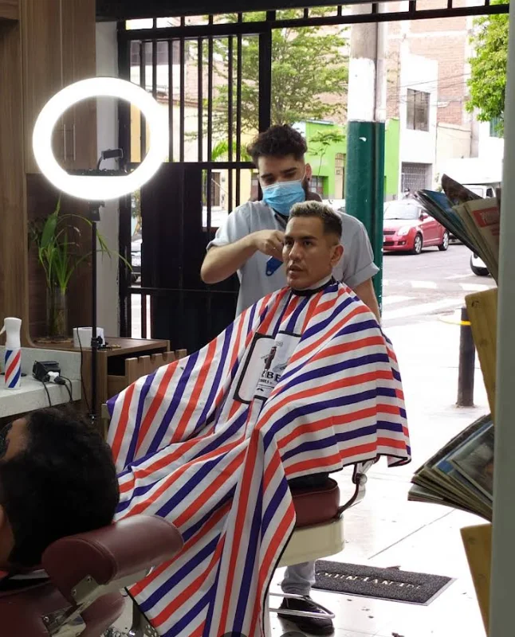

Primera plana
Un buen corte, con barberos que te escuchan.
Lapynta es una barbería clásica donde puedes encontrar barberos especializados que te asesoran sobre tu nuevo corte. Con un ambiente de calle vieja: calavera de toro, rueda de carreta y sillones de toda la vida.

Clasificados
Servicios
Lo que se hace en el local, según su catálogo de WhatsApp y las reseñas de sus clientes.
- Limpieza facialVaporización con ozono, exfoliación, black mask y masajes · unos 45 minS/ 35
- Corte para caballerosCon asesoría del barberoConsultar
- Corte para niñosConsultar
- Afeitado y arreglo de barbaConsultar
- Mascarilla facial profundaTambién de colágenoConsultar
- Hidratación capilarConsultar
- Tratamiento capilarConsultar
- Pinta y lavado de cortesíaSegún una reseñaConsultar
Solo la limpieza facial tiene precio publicado en su catálogo. Los demás precios se consultan por WhatsApp.
Crónica del local
Un sitio con carácter

Los clientes cuentan que mientras esperan su turno les ofrecen café u otras bebidas, que el local está limpio y que el barbero escucha: si le pides que baje un poco, no te deja pelado.
El estilo de la casa es clásico y de aire western: capas de rayas rojas, azules y blancas, carteles de metal en la pared y una calavera de toro con sombrero sobre una rueda de carreta.
Más de un cliente la nombra entre las mejores barberías de Magdalena del Mar.

Cartas al director
Lo que escriben los clientes
5,0 en Google con 101 reseñas.
Que buen corte me quedó, excelente. Barbero sí escucha a sus clientes y si le dices baja un poco no te deja pelado.
Samir I. · hace un año
Excelente atención y un ambiente súper acogedor. Quedé feliz con el resultado y definitivamente volveré.
Olga D. · hace 5 meses
Muy buen servicio, 100 % recomendado. La atención es muy buena, bueno, bonito y barato.
Nilsson T. · hace un año
Excelentes barberos. Me realicé un servicio completo de corte de cabello y el ambiente, súper limpio. Una de las mejores barberías de Magdalena.
Martin C. · hace un año
Me realizaron una hidratación capilar. Muy bien servicio. Además, mientras esperaba mi turno me ofrecieron bebidas.
Mariano R. · hace un año
A mi hijo le realizaron un corte para niños y le encantó. Buen servicio, ubicado en Magdalena del Mar.
Christyan C. · hace un año
Avisos
Pide tu turno
Dónde estamos
Jr. San Martín 793
En la misma cuadra está Lapynta Salón, en el 791.
| Lunes | 10:00 – 20:00 |
|---|---|
| Martes | 10:00 – 20:00 |
| Miércoles | 10:00 – 20:00 |
| Jueves | 10:00 – 20:00 |
| Viernes | 10:00 – 20:00 |
| Sábado | 10:00 – 20:00 |
| Domingo | 10:00 – 18:00 |